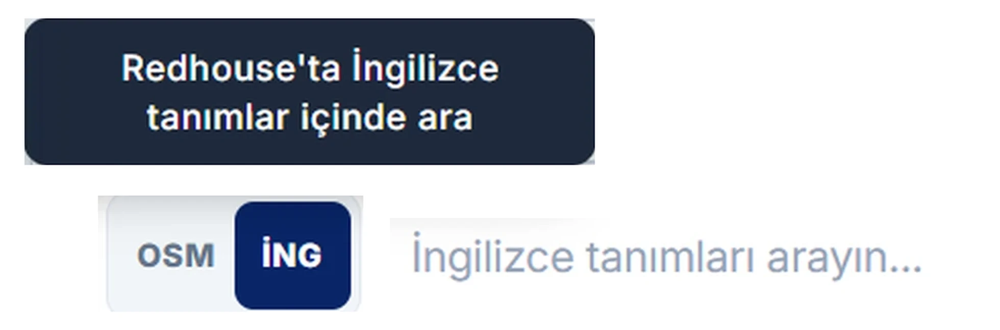
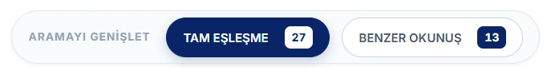
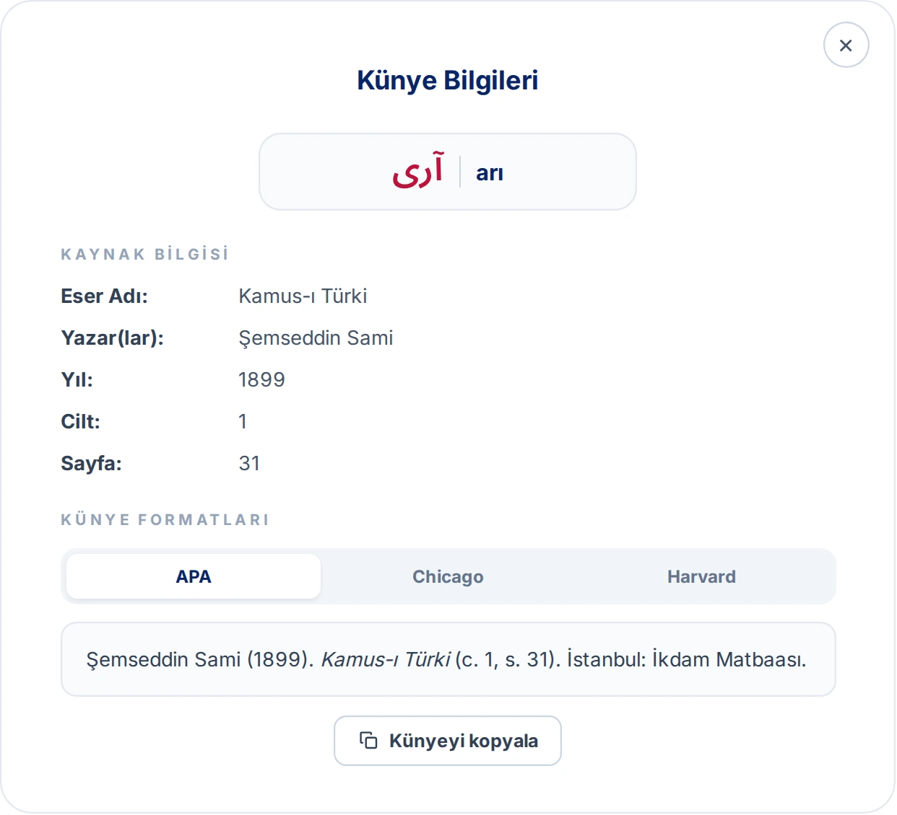
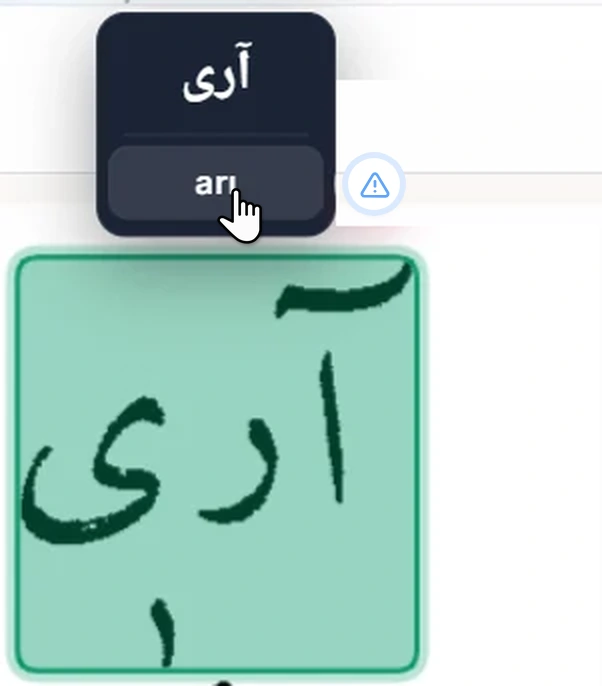

Ara sekmesi
Arama satırı tek bir çubuktan oluşur: solda kelimeyi Latin harfleriyle, sağda Osmanlı harfleriyle yazabileceğiniz alanlar, hemen yanında da hangi sözlüklerde arama yapılacağını belirlediğiniz liste yer alır.
LexiQamus 3.0'ın arama ekranlarını, kelime çözücüyü, sonuç listesini ve sözlük sayfası penceresini adım adım anlatan kılavuz.
LexiQamus iki ayrı arama biçimi sunar. Ara sekmesi okuyabildiğiniz bir kelimeyi doğrudan aramak, Kelime Çözücü ise okuyamadığınız bir kelimeyi elinizdeki ipuçlarından yola çıkarak tespit etmek içindir. İki sekme arasında istediğiniz an geçiş yapabilirsiniz.
Arama satırı tek bir çubuktan oluşur: solda kelimeyi Latin harfleriyle, sağda Osmanlı harfleriyle yazabileceğiniz alanlar, hemen yanında da hangi sözlüklerde arama yapılacağını belirlediğiniz liste yer alır.
Arama kutusu iki yarıdan oluşur. Sol yarıya kelimeyi Latin harfleriyle, sağ yarıya Osmanlı harfleriyle yazarsınız. İkisini birlikte de kullanabilirsiniz; kelimeyi nasıl okuduğunuzu biliyorsanız Latin tarafına yazmanız yeterlidir.

Kutunun başındaki OSM ve İNG düğmeleri, yazdığınızın nerede aranacağını belirler. OSM seçiliyken Osmanlıca kelimeler arasında arama yapılır. İNG seçildiğinde ise arama sözlüklerdeki İngilizce tanımların içinde yapılır; böylece bir İngilizce kelimeyi tanımında geçiren bütün maddeleri görebilirsiniz.

Osmanlıca tarafa tıkladığınızda ekran klavyesi açılır. Harflere tek tek tıklayarak yazabilirsiniz.
Fakat klavyeyi kullanmak zorunda değilsiniz. Her tuşun üzerinde, o harfe karşılık gelen fiziksel klavye tuşu yazılıdır: A tuşu ا, B tuşu ب, SHF+S ص harfini verir. Yani kelimeyi kendi klavyenizden hızlıca yazabilir, sadece emin olmadığınız harfler için ekrana bakabilirsiniz.

Öntanımlı olarak bütün sözlüklerde arama yapılır. Listeyi açıp Tümünü Seç işaretini kaldırdığınızda sözlükleri tek tek seçebilirsiniz.
Bu, aramayı belirli eserlerle sınırlamak istediğinizde işinize yarar: yalnızca seçtiğiniz sözlüklerden gelen sonuçlar listelenir.

Her iki arama biçimi de sizi aynı sonuç listesine götürür. Liste dört sütuna ayrılmıştır ve her satır, bir sözlükte geçen tek bir kaydı gösterir.
Yazılışa Göre Ara, aradığınız ifadenin muhtemel yazılış ve okunuşlarını düğmeler halinde sunar. Bir düğmeye tıkladığınızda arama o yazılışa göre yenilenir. Bu yazılış ve okunuşlar bir tahmin değildir; sözlükleri dijitalleştirirken sisteme veri olarak girdiğimiz kayıtlardan gelir. Böylece aynı kelimenin farklı imla ve okunuşlarına tek tıkla geçebilirsiniz.

Osmanlı alfabesinde aynı ya da çok yakın okunan birden fazla harf vardır: ث ile س, ت ile ط gibi. Bir kelimeyi duyduğunuz gibi yazdığınızda, sözlükteki imlası sizinkinden farklı olabilir. Benzer Okunuş, aramanızdaki harflerin yerine ses bakımından benzerlerini de koyarak arar; böylece imlası farklı olduğu için gözden kaçacak sonuçları da listeye ekler. Düğmenin yanındaki sayı, bu genişletmenin kaç sonuç getirdiğini gösterir.

Sonuç satırlarında her Osmanlıca kelimenin yanında bir Latin okunuşu yer alır. Bu okunuşların bir kısmı editörlerimiz tarafından tek tek kontrol edilip onaylanmıştır. Geri kalanı ise Osmanlıca yazılıştan hareketle otomatik olarak üretilmiştir ve bu yüzden her zaman isabetli olmayabilir.
İkisini ilk bakışta ayırt edebilirsiniz: otomatik üretilmiş okunuşlar soluk, editör onaylı okunuşlar koyu renkte gösterilir. Aşağıdaki ilk iki satırdaki nazar otomatik üretilmiştir, üçüncü satırdaki ise editör onaylıdır.

Bir okunuşun üzerine geldiğinizde yanında küçük bir kutu açılır. Kutunun başındaki etiket okunuşun durumunu söyler: Otomatik üretim ya da Editör onaylı. Altındaki iki düğme ise okunuş hakkında bize geri bildirim vermeniz içindir.

Doğru düğmesiyle okunuşun isabetli olduğunu tek tıkla bildirirsiniz; düğme yeşile döner. Otomatik üretilmiş okunuşlarda bu işaret, hangi okunuşların doğru olduğunu görmemize yardımcı olur. İşaretlenen okunuşları editörlerimiz kontrol eder; kontrolden geçen okunuş Editör onaylı hâline gelir ve koyu renkte gösterilmeye başlar.

Düzelt düğmesi bir bildirim penceresi açar. Pencerenin başında kelimenin Osmanlıca yazılışı ile okunuşu durur, altında üç seçenek bulunur. Yanlış pencere açıldığında seçili gelir ve okunuşun neden yanlış olduğunu açıklamanızı ister; doğrusunu biliyorsanız onu da yazabilirsiniz. Okunuşun doğru olduğunu belirtip bir not eklemek isterseniz Doğru’yu seçersiniz; bu durumda not yazmak isteğe bağlıdır. Doğru ya da yanlış demeden okunuş hakkında söylemek istediğiniz bir şey varsa Görüş’ü kullanırsınız.

Açıklamanızı yazıp Gönder’e bastığınızda bildiriminiz bize ulaşır ve pencerede bir teşekkür mesajı görünür. Gelen bildirimleri de editörlerimiz inceler; okunuş gerekiyorsa düzeltilir ve kontrolün ardından Editör onaylı hâline gelir. Vazgeçerseniz İptal’e basmanız yeterlidir.

Kategori etiketi, sonucun maddeyle nasıl bir ilişki içinde olduğunu söyler ve satırın solundaki renkli çizgi de aynı ayrımı yapar.
Madde Başı: kelime, sözlükte kendi adına açılmış bir maddenin başlığıdır.
Alt Madde Başı: kelime, bir madde başının altında ayrıca ele alınmış bir alt maddedir.
İlişkili: kelime maddenin başlığı değildir, madde içinde geçmektedir yahut o maddeyle bağlantılıdır.

Her satır iki ayrı bölgeye ayrılır ve hangisine tıkladığınız sizi farklı yere götürür. İmleci satırın üzerine getirdiğinizde hangi bölgede olduğunuz renklenerek belli olur.
Sol bölge, yani sonuç kelimesinin kendisi: Sonuca git. Orijinal sözlük sayfası açılır ve doğrudan kelimenin geçtiği yer karşınıza gelir. Buradan yukarı kaydırarak maddenin başına da çıkabilirsiniz.
Sağ bölge, yani madde başı ve sözlük bilgisi: Madde başına git. Aynı sayfa açılır, fakat bu kez doğrudan maddenin başından.


Bu iki bölgenin içinde ayrıca dört kelime vardır: sonucun Osmanlıca yazılışı ve Latin okunuşu, madde başının Osmanlıca yazılışı ve Latin okunuşu. İmleci bu kelimelerden birinin tam üzerine getirdiğinizde Bu kelimeyi ara ipucu belirir. Tıkladığınızda o kelime bütün sözlüklerde aranır ve sonuçlar yeni bir sekmede açılır; bulunduğunuz sonuç sayfası olduğu gibi kalır. Böylece bir sonuçta ya da madde başında gözünüze çarpan kelimenin peşine, aramanızı kaybetmeden düşebilirsiniz.

Sütunun sağ ucundaki düğme o kaydın künye bilgilerini açar. Eserin adı, yazarı, yılı, cildi ve sayfası burada toplu olarak yer alır.
Künye penceresinde atıf üç ayrı biçimde hazır olarak sunulur: APA, Chicago ve Harvard. Kullanacağınız biçimi seçip tek düğmeyle kopyalayabilirsiniz.


Aradığınızı listede bulamadıysanız sayfanın altındaki bu düğmeye basın.
LexiQamus, girdiğiniz yazılışa harf harf yakın duran kelimeleri tarar ve numaralı bir liste halinde önünüze getirir. Yanlış okunmuş tek bir harf yüzünden gözden kaçan kelime çoğu zaman bu listede çıkar.


Bir sonuca yahut madde başına tıkladığınızda sözlüğün orijinal sayfası bir pencerede açılır. Bu pencere yalnızca taramayı göstermez: o sayfada dijitalleştirilmiş kelimeleri tarama üzerinde işaretler ve her birinin dijital karşılığını gösterir.
Pencere ilk açıldığında Dilim görünümü etkindir. Alttaki şerit, aradığınız yerin sözlüğün kaçıncı sayfasında, hangi sütununda ve o sütunun kaçıncı diliminde olduğunu söyler.
Sütun'a tıkladığınızda sütunun tamamı açılır. Sayfa'ya tıkladığınızda ise sayfanın tamamını görürsünüz. Dijitalleştirilmiş kelimeler üç görünümde de işaretli kalır.


Maddede dijitalleştirilmiş olan kelimeler tarama üzerinde kutu içine alınır. Kutuların rengi kelime kategorisine göre değişir; sonuç listesindeki kategori ayrımının aynısı burada da geçerlidir.
Gri duran kelimeler de dijitalleştirilmiştir. Üzerlerine geldiğinizde renklenir ve dijital karşılıkları görünür.

Bir kutunun üzerine geldiğinizde kelimenin Osmanlıca yazılışı ve Latin okunuşu alt alta belirir.

Kelime bir öbeğin parçasıysa iki katman birden görürsünüz: üstte imlecin bulunduğu kelimenin dijitali, altta öbeğin tamamının dijitali.

Tarama üzerindeki bir kelimeye yahut beliren dijital değerlerin üzerine tıkladığınızda o kelime için yeni bir arama başlar ve yeni sekmede açılır. Böylece okuduğunuz maddeden ayrılmadan yan yollara girebilirsiniz.
Aşağıdaki görselde işaretlenen beş yerin her biri böyle bir arama başlatır: taramadaki kelime ile üstte ve altta beliren kutuların Osmanlıca ve Latin satırları.

Dijitalleştirmede bir hata olduğunu düşünüyorsanız kelimenin üzerine gelin ve yanında beliren uyarı işaretine (Hata bildir) basın.


Açılan pencerede kelime hazır olarak gelir. Altındaki alana hatayı yahut önerdiğiniz düzeltmeyi yazıp gönderirsiniz.

Pencerenin iki yanındaki oklarla maddeler arasında tek tıkla gezinebilirsiniz. Oklar dilim, sütun ve sayfa görünümlerinin hepsinde çalışır.
El yazması bir metinde okuyamadığınız bir kelimeyle karşılaştığınızda kullanacağınız araç budur. Okuyabildiğiniz harfleri girer, okuyamadıklarınız için işaret bırakırsınız; LexiQamus bu ölçütlere uyan kelimeleri listeler.
Her kutu bir karakteri temsil eder. Boş bırakılan kutu boşluk demektir, dolayısıyla tek kelimeleri olduğu gibi kelime öbeklerini de arayabilirsiniz.
Kutuların arasındaki + düğmeleriyle araya yeni kutu eklersiniz. Kutuların altındaki zincir işaretleri harflerin bitişik olup olmadığını gösterir; bunu belirttiğinizde sonuçlar daralır.
Bir kutuya tıkladığınızda harf klavyesi açılır. Buradan hem normal harfleri hem de benzer şekilli harfleri temsil eden özel karakterleri girebilirsiniz.
Üstteki iki yeşil tuş önemlidir. * okunamayan tek bir harf demektir. ∞ ise adedi bilinmeyen, bir veya birden fazla okunamayan harf anlamına gelir. Aramanız sonuç vermiyorsa, emin olmadığınız kısma bu işaretleri koyarak aramayı genişletebilirsiniz.
Bir kutuya birden fazla harf de girebilirsiniz. و, د ve ر gibi birbirine karışan harflerde, ihtimallerin hepsini aynı kutuya koyup hepsini birden aratmış olursunuz.
Aşağıda okunabilen harflerin girildiği, okunamayan bir harf için * bırakılan ve harfler arası bitişiklik durumunun işaretlendiği bir çözücü satırı görünüyor. Ara düğmesine bastığınızda bu ölçütlere uyan kelimeler listelenir.

Sonuç: aradığınız ölçütlere uyan kelimenin kendisi, Osmanlıca yazılışı ve Latin okunuşuyla birlikte.
Kategori: bu kelimenin bulunduğu sözlük maddesiyle ilişkisi.
Madde Başı: kelimenin geçtiği maddenin başlığı. Sonuç kelimesinin kendisi bir madde başı olabileceği gibi, başka bir maddenin içinde de geçiyor olabilir.
Sözlük: kaydın alındığı eser, basım yılı ve sayfa numarası.

Çözücüyle yapılan aramanın sonuç sayfası, yukarıda anlatılan listeyle aynı şekilde çalışır. Yalnızca iki farkı vardır.
Sonuçların üstünde, aramayı hangi ipuçlarıyla yaptığınız kutu dizisi halinde durur. Böylece listeye bakarken hangi harfleri girdiğinizi, nereye * veya ∞ koyduğunuzu görebilirsiniz.
Sonuç sayısının yanındaki İpuçlarına göre ifadesi de listenin bu ölçütlere göre oluşturulduğunu belirtir.

Çözücü aramaları çok sayıda sonuç verebildiği için liste bir kısmıyla açılır. Sayfanın altındaki düğme kaç sonucun gösterildiğini ve geriye kaç tane kaldığını söyler; bastığınızda listenin devamı yüklenir.